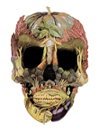

Planeta Vegano
A revolução pode acontecer

Transição
Se nos consideramos especie rara porvsermos dotados de inteligência, deveriamos considerar sempre que possível o Veganismo
Viver buscando a armonia entre os seres deveria ser obrigação para nossa especie que se considera desenvolvida e com esse estagio de conhecimento que possuimos. Hoje temos dados sufucientes para argumentar que é possivel sim viver um estilo de vida que prioriza o respeito e a armonia entre outras especies. Alem disso esse estilo de vida é bem mais vantajoso e melhor que outros estilos de vida em muitos outros aspectos.
Veganismo:
O veganismo, segundo definição da Vegan SoSociety, é um modo de viver. Essa escolha de estilo de vida busca excluir, na medida do possível e praticável, todas as formas de exploração e crueldade contra os animais seja na alimentação, no vestuário ou em qualquervoutro tipo de consumo.
Vegetarianismo:
No vegetarianismo, temos um pouco de variações em relação ao veganismo, as interpretações do termo vegetariano se dão por conta do dinamismo desse termo, onde ele se divide em alguns Tipos.